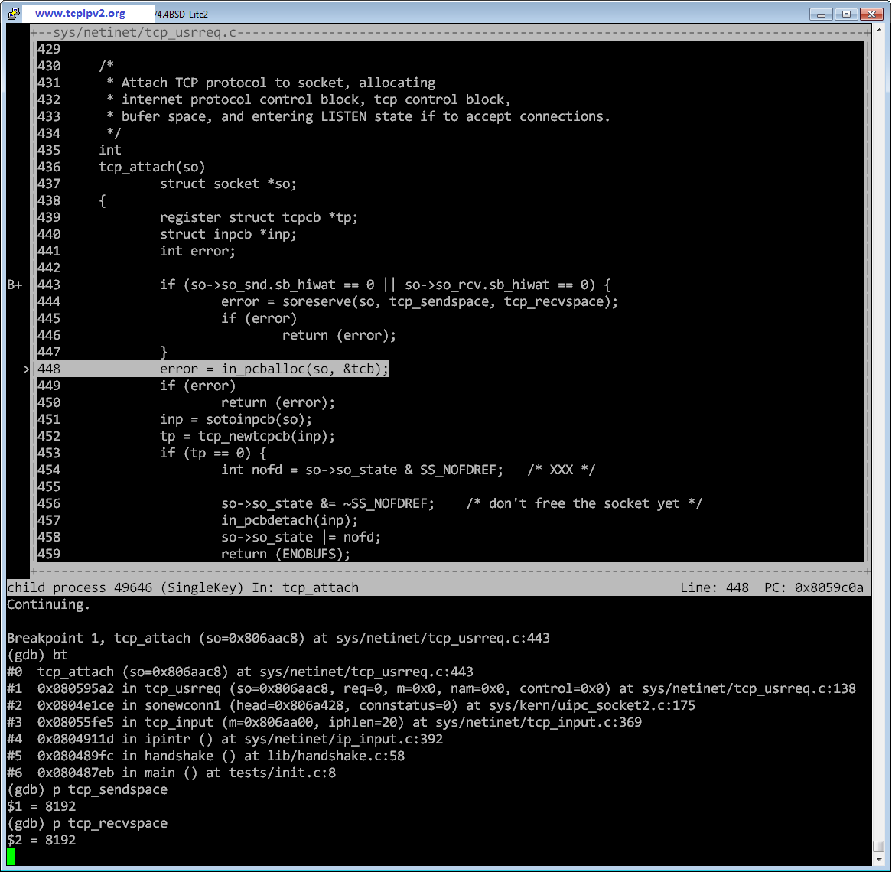

Unofficial companion site of TCP/IP Illustrated, Volume 2: The Implementation
TCP/IP Illustrated, Volume 2: The Implementation is written by Gary R. Wright and W. Richard Stevens, published in 1995. Official book page
This book presents the TCP/IP stack of 4.4BSD-Lite.
This site is based on a slightly newer version: 4.4BSD-Lite2.
Run TCP/IP stack of 4.4BSD-Lite2
On Linux,
$ git clone https://github.com/chenshuo/4.4BSD-Lite2.git
$ cd 4.4BSD-Lite2
$ make
This build three executables:
objs/test_initTCP three-way handshake, you can step through code withGDB, or check the calltreeobjs/test_pigeonICMP echo request/responseobjs/test_tunConnect to host with TAP/TUN device
Calltree of TCP three-way handshaking
$ objs/test_init
$ tcpdump -r init.pcap
reading from file init.pcap, link-type RAW (Raw IP)
07:02:11.718036 IP localhost > localhost: ICMP echo request, id 4995, seq 1, length 64
07:02:11.718039 IP localhost > localhost: ICMP echo reply, id 4995, seq 1, length 64
07:02:11.718135 IP localhost.1024 > localhost.1234: Flags [S], seq 1804289383, win 8192, options [mss 1496], length 0
07:02:11.718142 IP localhost.1234 > localhost.1024: Flags [S.], seq 1804333538, ack 1804289384, win 8976, options [mss 1496], length 0
07:02:11.718144 IP localhost.1024 > localhost.1234: Flags [.], ack 1, win 8976, length 0
07:02:11.718203 IP localhost.1024 > localhost.1234: Flags [.], seq 1:1497, ack 1, win 8976, length 1496
07:02:11.718206 IP localhost.1234 > localhost.1024: Flags [.], ack 1497, win 7480, length 0
07:02:11.718213 IP localhost.1024 > localhost.1234: Flags [.], seq 1497:2993, ack 1, win 8976, length 1496
07:02:11.718215 IP localhost.1024 > localhost.1234: Flags [.], seq 2993:4489, ack 1, win 8976, length 1496
07:02:11.718233 IP localhost.1234 > localhost.1024: Flags [.], ack 4489, win 4488, length 0
07:02:11.718241 IP localhost.1024 > localhost.1234: Flags [.], seq 4489:5985, ack 1, win 8976, length 1496
07:02:11.718242 IP localhost.1024 > localhost.1234: Flags [.], seq 5985:7481, ack 1, win 8976, length 1496
07:02:11.718251 IP localhost.1024 > localhost.1234: Flags [P.], seq 7481:8977, ack 1, win 8976, length 1496
07:02:11.718254 IP localhost.1234 > localhost.1024: Flags [.], ack 8977, win 0, length 0
07:02:11.718290 IP localhost.1234 > localhost.1024: Flags [.], ack 8977, win 7000, length 0
07:02:11.718309 IP localhost.1024 > localhost.1234: Flags [F.], seq 8977, ack 1, win 8976, length 0
07:02:11.718310 IP localhost.1234 > localhost.1024: Flags [.], ack 8978, win 7000, length 0
07:02:11.718326 IP localhost.1234 > localhost.1024: Flags [F.], seq 1, ack 8978, win 8976, length 0
07:02:11.718328 IP localhost.1024 > localhost.1234: Flags [.], ack 2, win 8976, length 0
GDB session of TCP three-way handshaking
